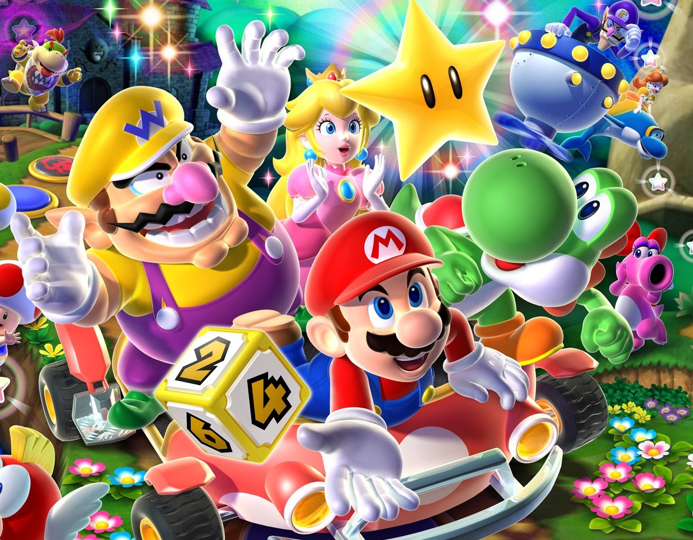

Games are for Everyone
Usually, the first thing gamers see when starting a new game is the difficulty selection screen. Easy being the one typically used for younger children, people who are more interested in story than gameplay, people with disabilities, or people who lack skills in gaming. Normal is for how the developer intended the game to be played. Hard for those looking for more of a challenge. Sometimes options for sandbox, very easy, or hardcore are available as well. Sandbox meaning that there aren't any monsters or anything that can cause harm to the player.
It's great to have these options because it allows for a wide audience of players. However, there are some games that lack these options simply because the developer only wants the game to be experienced in a particular way. This may be because it's only a story-based game and hints are given through other means or that the game is meant to be hard. However, this is becoming more and more frowned upon in the gaming community. It’s believed that entertainment shouldn't have a skill threshold for players to experience the story. This includes having hidden endings in games because of playing it on a certain difficulty.